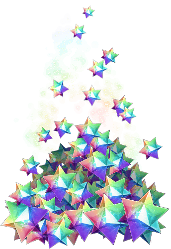
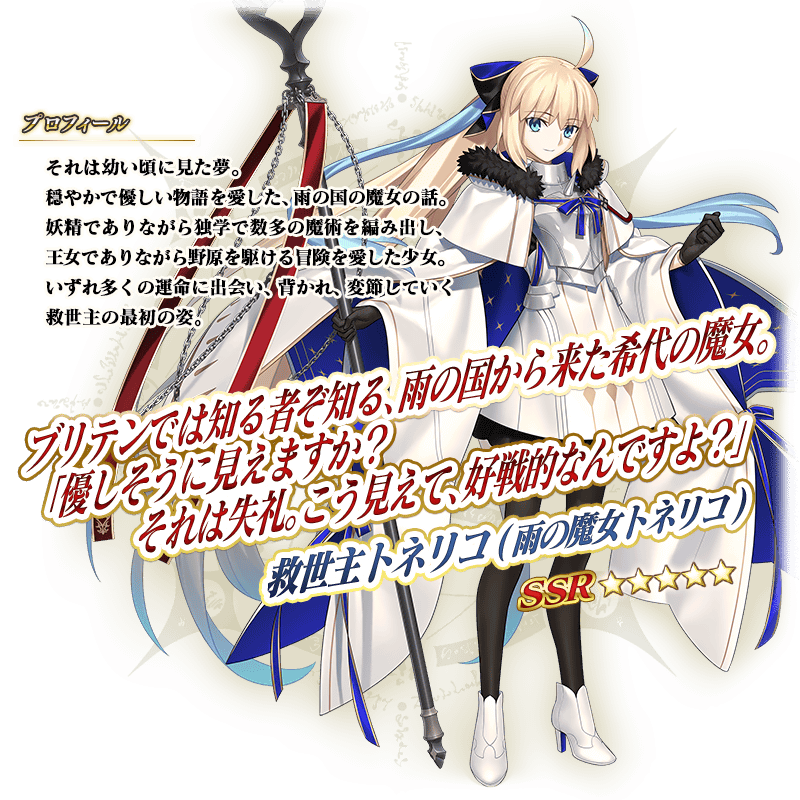
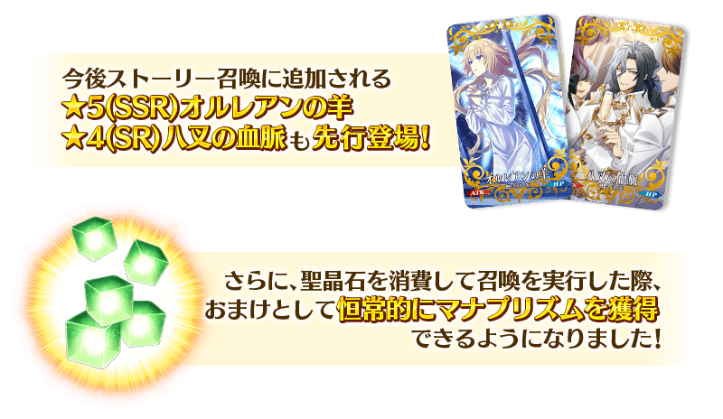
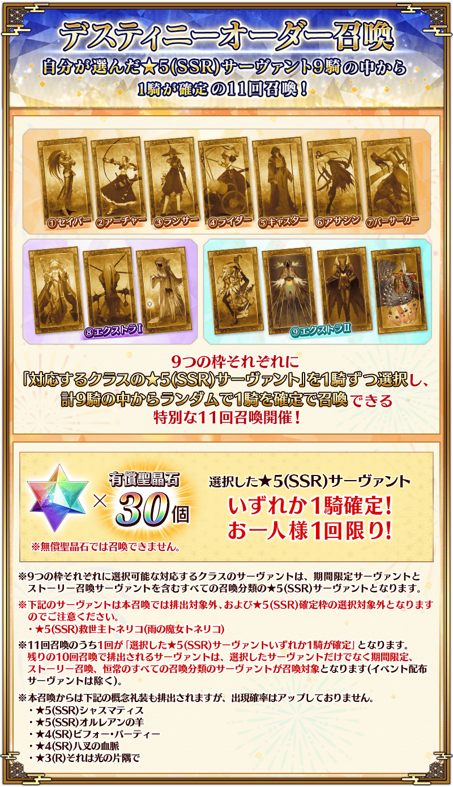
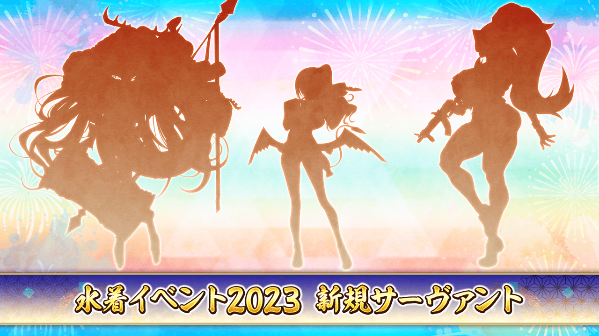
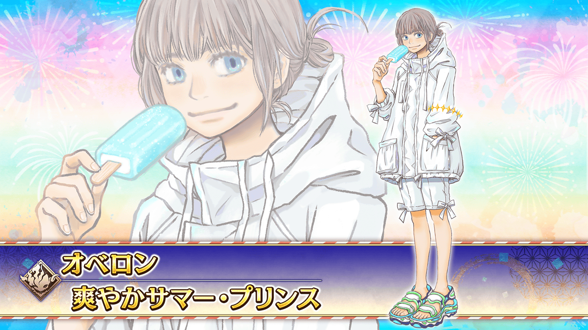
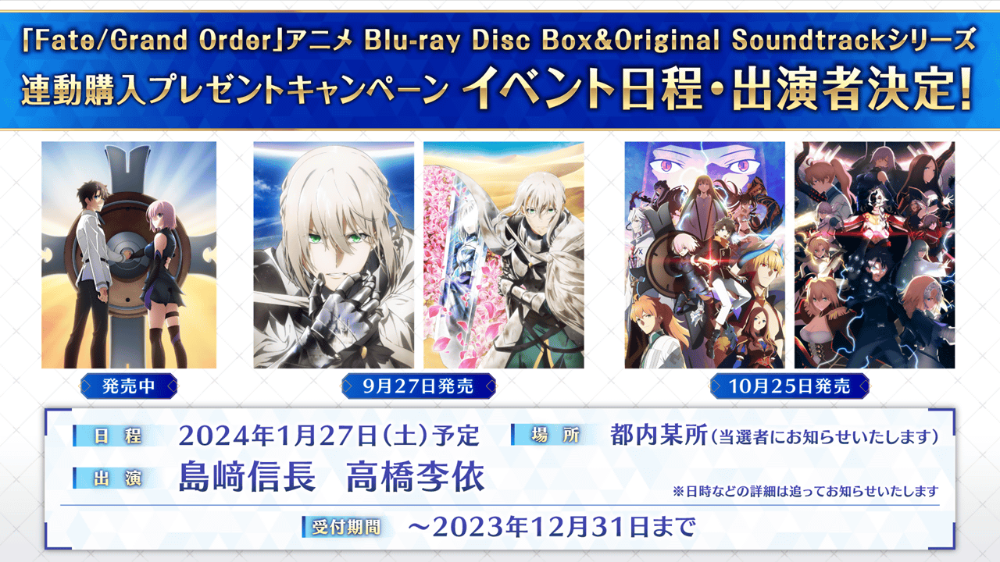
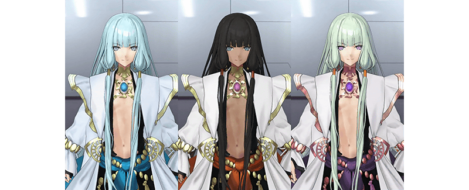

感謝您使用「Fate/Grand Order」。
在2023年7月7月30日(日)放送的「Fate/Grand Order 迦勒底放送局 8周年SP」發表了智慧型手機向FateRPG「Fate/Grand Order」為主的FGO PROJECT新情報。
以下介紹節目內發表的一部份新情報。
※本頁面皆為開發中圖片。會有與實際圖片相異的情況。
※在2023年7月30日(日)公開的內容皆為開發中，會有與實際內容不同的情況。
◆「Fate/Grand Order Fes. 2023 夏日祭典 ～8th Anniversary～」播送節目連動宣傳活動報酬贈送！◆

贈送做為在2023年7月30日(日)放送「Fate/Grand Order Fes. 2023 夏日祭典 ～8th Anniversary～」進行的特別節目連動宣傳活動報酬的聖晶石100個！
◆贈送內容◆
聖晶石 100個
(10萬RT達成報酬20個×放送內挑戰達成後5倍=100個)
◆領取期間(1週內)◆
2023年7月31日(一) 3:00～8月7日(一) 2:59
上述期間中，在初次登入到「Fate/Grand Order」的時間點，贈予到禮物箱。
※禮物只能領取1次。
◆「Fate/Grand Order ～8th Anniversary～」舉辦！◆
發表了「Fate/Grand Order ～8th Anniversary～」自2023年7月30日(日) 17:00舉辦。
「10大宣傳活動」的舉辦和新從者「★5(SSR)救世主托內莉可(雨之魔女托內莉可)」登場。
《10大宣傳活動》
①8周年記念特別次數登入獎勵
②其1:【期間限定】大成功・極大成功率提升！
其2:【期間限定】全每日關卡與白紙化地球上自由關卡的消耗AP1/2！＆「蒐集種火」「修練場」關卡全開放！
其3:【永久】關卡通過時的先發成員的絆點數獲得量提升20%！
③8周年記念限定祭典任務舉辦！
④一部份道具等的持有欄位&保管欄位擴大！
⑤其1:【永久】新的特殊任務追加！
其2:【永久】新的特殊任務追加！
其3:【期間限定】在御主任務追加職階刻痕解放的任務！
⑥其1:【永久】第2部 第7章(後編)為止的主線關卡消耗AP1/2！＆【期間限定】接關道具「靈脈石」再登場！
其2:【期間限定】在御主任務追加主線關卡進行度的任務！
⑦「從者強化關卡 第16彈～8th Anniversary～特別篇」舉辦！
⑧其1:【永久】在達・文西工房「魔力稜鏡交換」追加7種過去的活動配布概念禮裝！
其2:【永久】在每月「魔力稜鏡交換」追加強化用素材！
其3:【永久】在施行聖晶石召喚時追加做為聖晶石消耗獎勵的魔力稜鏡！
⑨「8周年記念福袋召喚」舉辦！
⑩「命運指定召喚」舉辦！
◆【期間限定】「8周年記念 救世主托內莉可(雨之魔女托內莉可)Pick Up召喚」舉辦！◆
發表了為了記念「Fate/Grand Order」8周年，舉辦「8周年記念 救世主托內莉可(雨之魔女托內莉可)Pick Up召喚」。
期間:2023年7月30日(日) 17:00～8月9日(三) 11:59

※上述「★5(SSR)救世主托內莉可(雨之魔女托內莉可)」的立繪為靈基再臨第2階段。
新登場的期間限定從者「★5(SSR)救世主托內莉可(雨之魔女托內莉可)」與3種期間限定概念禮裝Pick Up。
另外，2023年7月30日(日) 17:00以後，在施行所有聖晶石召喚(無論有償、無償)時，變得可獲得魔力稜鏡做為聖晶石消耗獎勵！
並且，今後追加故事召喚的2種概念禮裝先行登場外，翻新★4(SR)概念禮裝的一部份陣容！

◆「8周年記念福袋召喚(5周年以後 男女×推出順序12劃分)」舉辦！◆
發表了從在5周年以後登場從者依「男女×推出順序」分組成全12種之中，只能選任1個召喚「8周年記念福袋召喚(5周年以後 男女×推出順序12劃分)」的舉辦。
舉辦期間:2023年7月30日(日) 17:00～8月9日(三) 11:59
確定1位對應選擇召喚的期間限定★5(SSR)從者！
並且，也確定1位對應選擇召喚的包含期間限定的★4(SR)以上從者。
※用有償聖晶石15個才能召喚。無法用無償聖晶石召喚。
◆【期間限定】「命運指定召喚」舉辦！◆
發表了可從自己選擇的9位★5(SSR)從者之中確定1位的11次召喚【期間限定】「命運指定召喚」的舉辦。
期間:2023年7月30日(日) 17:00～8月9日(三) 11:59

◆【期間限定】「從者・夏日・慶典2023！」開幕(預定)！◆
決定了期間限定活動「從者・夏日・慶典2023！」的開幕。
本次的主線劇本是奈須きのこ撰寫。
■活動開幕預定
2023年8月中旬(預定)
■活動參加條件
滿足以下條件的御主才能參加
・通過「特異點F 炎上汙染都市 冬木」
另外，公開了期間限定活動「從者・夏日・慶典2023！」中3位新登場從者的剪影圖片。

並且，發表了在期間限定「泳裝活動2023」新靈衣開放權登場。
・奧伯龍 靈衣「清爽的夏日王子(爽やかサマー・プリンス)」

◆「Memorial Movie 2023」公開◆
公開了「Memorial Movie 2023」。
在「Fate/Grand Order」官方網站內Gallery公開「Memorial Movie 2023」。
敬請確認。
另外，決定了收錄「Memorial Movie 2023」的影像素材等的資料集製作。

■「Fate/Grand Order Beyond the Tale」企劃 特設網站
https://beyond.fate-go.jp/
◆「Fate/Grand Order」動畫 Blu-ray Disc Box＆ Original Soundtrac系列連動購入贈送宣傳活動 活動日程・出演者決定！◆

決定了「Fate/Grand Order」動畫 Blu-ray Disc Box＆ Original Soundtrack系列連動購入贈送宣傳活動 的活動日程與出演者。
【日程】2024年1月27日(六)預定
【場所】市內某地(將告知當選者)
【出演】島﨑信長・高橋李依
※時間等的詳情會另外公告
■「Fate/Grand Order」動畫入口網站
https://anime.fate-go.jp/bdbox-ost/
◆「Fate/Grand Order Arcade」最新情報◆

發表了可在「Fate/Grand Order Arcade」變更從者顏色的「換色版本」從8月1日(二) AM6:00登場。
8月的「換色版本」陣容會は「尼莫/諾亞」，全部實裝3色。
※此處是「Fate/Grand Order Arcade」的發表內容。
詳情請確認「Fate/Grand Order Arcade」官方網站的公告。
■「Fate/Grand Order Arcade」官方網站
https://arcade.fate-go.jp/
今後也請多多指教「Fate/Grand Order」。